When you multiply one matrix by another matrix, the result is also a matrix. If you multiply matrix 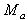 by matrix 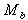, the result is matrix 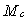.
Use the following formula to obtain each element of row i and column j in the resulting matrix where 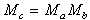:
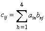
For example, to calculate the element in the second row and third column of , use this formula:
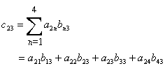
As you can see, the element of the second row and the third column is the product-sum of the second row of the matrix and third column of the matrix as illustrated here:
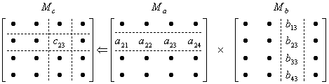
Note that for matrix multiplication to be possible, the number of columns in matrix A must equal the number of rows in matrix B. In other words, n and p in the following illustration must be equal:
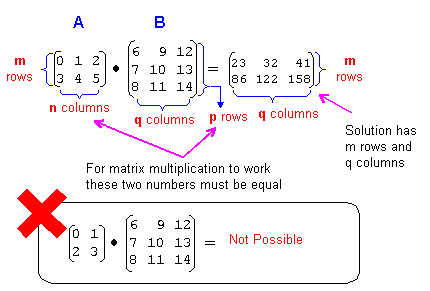
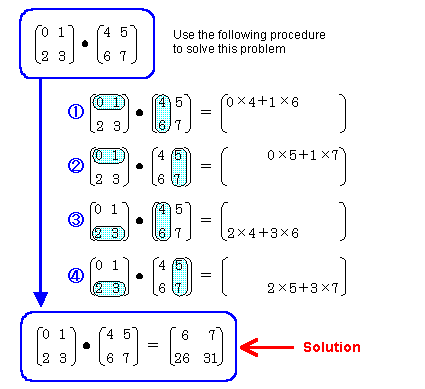
Following is another example that shows that if you change the order of the matrix multiplication, the result is different:
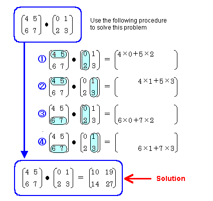
In other words, the commutative law is invalid for matrix multiplication, so you need to pay close attention to the order you use when multiplying matrices together:
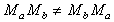
However the associative law is valid for matrix multiplication:
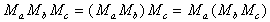
You can use the following two N64 functions for matrix multiplication:
Nintendo® Confidential
Copyright © 1999
Nintendo of America Inc. All Rights Reserved
Nintendo and N64 are registered trademarks of Nintendo
Last Updated March, 1999